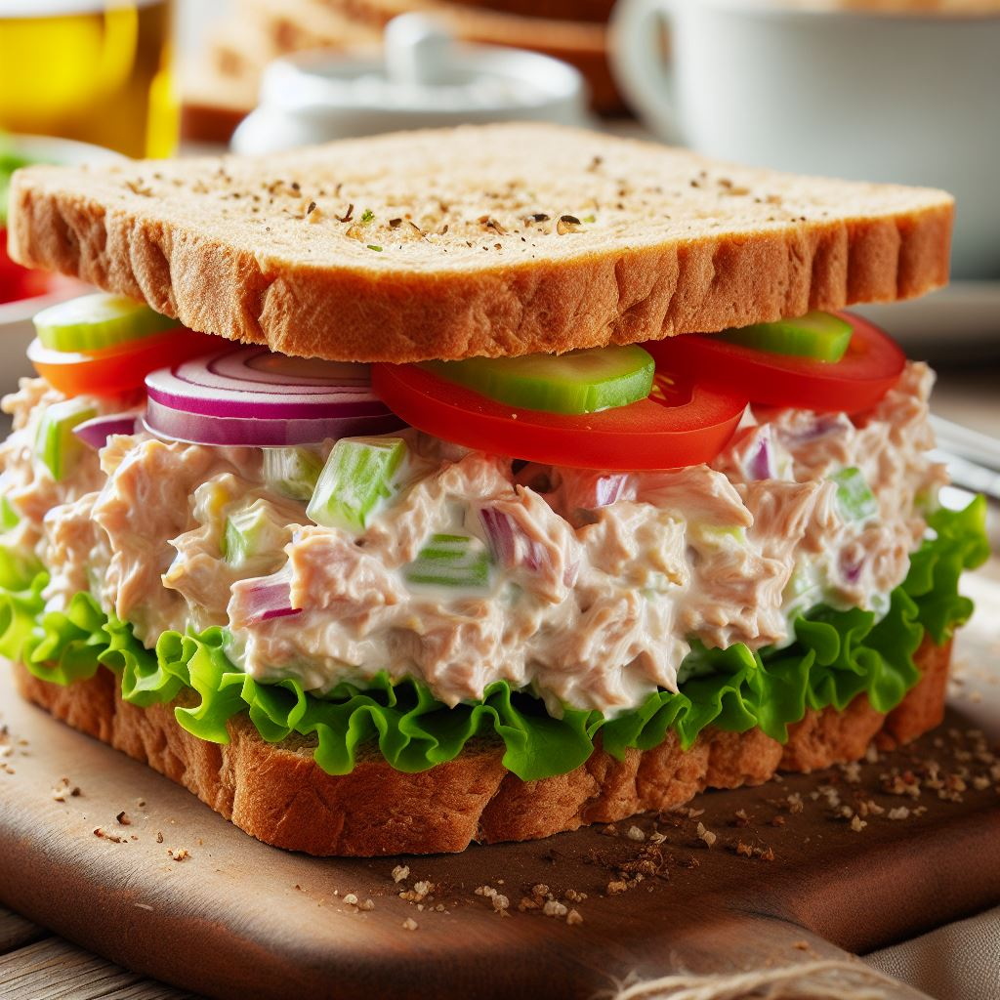

Lunch in a Crunch

Description
When you're short on time but need a satisfying and nutritious lunch, this Tuna Salad Sandwich is the perfect
solution. Made with flaky tuna, creamy mayo, crunchy celery, and zesty lemon juice, it's a classic that never
disappoints.
Ingredients
- 2 (5 oz) cans tuna, drained
- 1/4 cup mayonnaise
- 2 tablespoons diced celery
- 1 tablespoon lemon juice
- 1/4 teaspoon salt
- 1/4 teaspoon black pepper
- 8 slices bread
- Lettuce and tomato (optional)
Steps
- In a medium bowl, combine the tuna, mayonnaise, celery, lemon juice, salt, and pepper.
- Mix well until all ingredients are evenly distributed.
- Toast the bread slices, if desired.
- Spread the tuna salad evenly on 4 of the bread slices.
- Top with lettuce and tomato, if using.
- Place the remaining 4 bread slices on top to form sandwiches.
- Serve and enjoy!
Back to main page